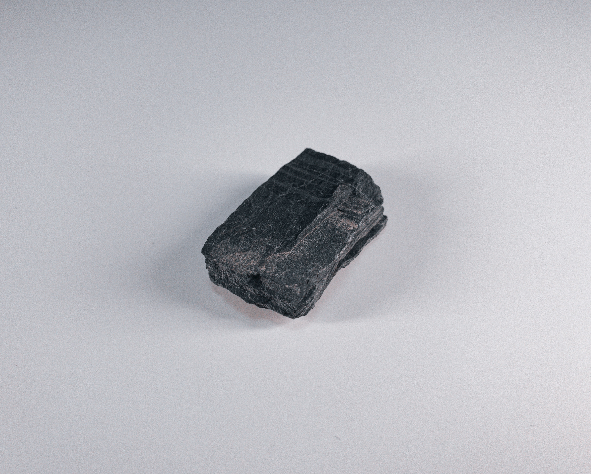

A single piece of coal, once part of a giant tree, now lay on the forest floor. As the sun beat down, a spark ignited the coal, causing it to glow red-hot. Flames danced around the coal, feeding on its energy. The air around the coal grew hot, and the flames flickered and danced, creating a mesmerizing spectacle. As the coal burned, it released smoke and carbon dioxide into the air, a silent reminder of the power of nature.
The acrid scent of burning coal permeated the air, a heavy cloak that hung over the town like a lingering shroud. It was a smell that clung to everything, weaving itself into the fabric of life, inescapable and omnipresent. It was the smell of industry, of progress, of the relentless march of human endeavor. Yet, beneath the harshness of its fumes, there lingered a hint of something deeper, a memory of ancient forests and forgotten landscapes. It was a reminder of the earth's immense power, of its raw, untamed spirit.